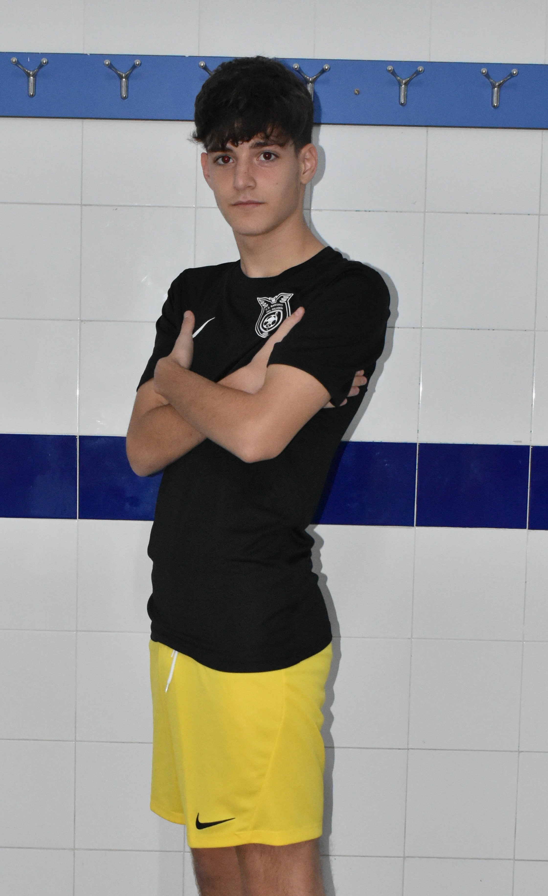

Equipaciones 2023-2024
las equipaciones del marismas del polvorín son fabricadas por nike marca de ropa deportiva de muy buena calidad, estas camisetas han ido evolucionando y año tras año han ido mejorando su calidad años anteriores habían sido fabricadas por marcas como cejudo u otras marcas de calidad más mediocre, estas equipaciones están disponibles de cara al públicoen la pagina de futbol emotion, para acceder a las camisetas del club deberás meterte en la página oficial de fútbol emotion y acceder a la parte de comprar camiseta de tu club y poner en el buscador en nombre de tu club en este caso será el marismas del polvorín, te pedira una clave para poder acceder a las equipaciones la clave es "marismas8" en esta página podremos encontrar varias equipaciones y prendas de ropa asi como tambien podremos encontrar varios accesorios como neceseres o mochilas, en cuanto a prendas de ropa tenemos mucha diversidad desde chaquetones a chandals.Las equipaciones del club actualmente son 3 dos utilizadas para partidos una local y otra visitante y la tercera se utiliza para entrenar sería la celeste. también se han dado caso en el que las equipaciones se mezclan para no ser confundidas con las equipaciones rivales la combinación más habitual es la camiseta negra con las calzonas y calcetas amarillasNEGRA Y AMARILLA

AMARILLA